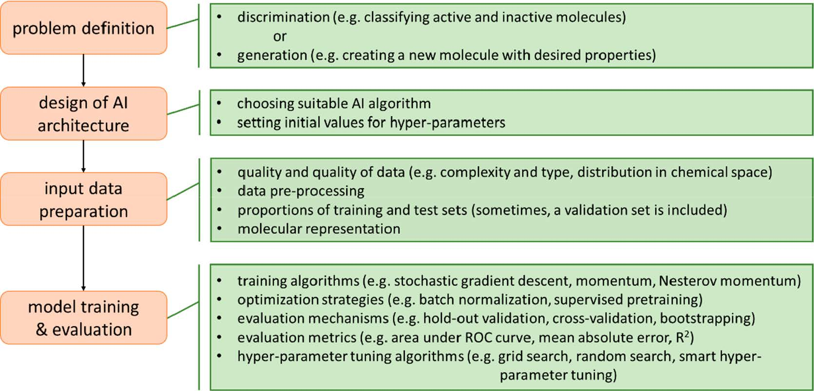
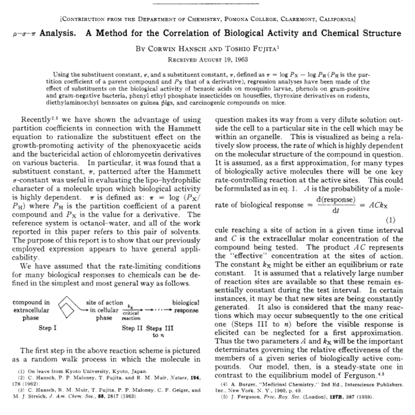

Cheminformatics … @Solvay
Paul J Kowalczyk, PhD
2020-07-17
Cheminformatics
https://www.nature.com/subjects/cheminformatics
Cheminformatics is the use of computational and informational techniques to understand problems of chemistry.
https://www.acs.org/content/acs/en/careers/college-to-career/chemistry-careers/cheminformatics.html
- Develop methods for data mining and performing statistical analysis of large datasets
- Develop methods for archiving and retrieving data on molecular structures, reaction pathways, molecular interactions, or other phenomena
- Collaborate with laboratory researchers to solve problems using data searching and retrieval
- Collaborate with researchers in various fields to integrate information from a variety of disciplines and sources
- Identify chemical property classifications and trends from large databases using mathematical techniques
Chemistry
+ Machine Learning
+ Data Mining
+ Data Curation
Cheminformatics
Machine Learning Workflows
CRoss-Industry Standard Process for Data Mining

R for Data Science
H. Wickham & G. Grolemund; ISBN-13: 978-1491910399

R in Action
Constructing a Cheminformatics Predictor
X. Yang, &c., Chem. Rev. 2019, 119, 10520-10594.

Boston Housing Data…
…compared to a representative cheminformatics dataset
In the beginning …

C. Hansch & T. Fujita, J. Am. Chem. Soc. 1964, 86(8), 1616-1626.
Topics
- Representing molecules
- Calculating features & fingerprints
- Similarity
- QSAR & QSPR: regression & classification
- Structure alerts
- Read across
- Network analysis
Representing Molecules
Canonical SMILES:
C[C@@H]1CC[C@H]2C@@HC(=O)O[C@@H]3O[C@]4(C)CC[C@@H]1[C@@]23OO4
Standard InChI:
InChI=1S/C15H22O5/c1-8-4-5-11-9(2)12(16)17-13-15(11)10(8)6-7-14(3,18-13)19-20-15/h8-11,13H,4-7H2,1-3H3/t8-,9-,10+,11+,13-,14+,15-/m1/s1
Standard InChI Key:
BLUAFEHZUWYNDE-DKGJTOOQSA-N
InChI = International Chemical Identifier
Artemisinin (CHEMBL567597) SDFile
SciTegic01161211242D
23 26 0 0 0 0 999 V2000
8.9610 -14.2763 0.0000 C 0 0
9.7561 -14.0715 0.0000 C 0 0
8.6232 -15.0326 0.0000 C 0 0 2 0 0 0
9.0079 -15.7655 0.0000 O 0 0
10.4145 -14.5618 0.0000 C 0 0 1 0 0 0
11.8718 -15.3337 0.0000 C 0 0
11.8411 -14.5088 0.0000 C 0 0
11.1102 -14.1227 0.0000 C 0 0 1 0 0 0
11.1714 -15.7725 0.0000 C 0 0 2 0 0 0
10.4429 -15.3836 0.0000 C 0 0 1 0 0 0
9.7513 -15.8203 0.0000 C 0 0 2 0 0 0
9.7780 -16.6436 0.0000 O 0 0
10.5025 -17.0284 0.0000 C 0 0
11.2043 -16.5940 0.0000 C 0 0 2 0 0 0
7.7986 -15.0587 0.0000 C 0 0
9.6477 -15.2738 0.0000 O 0 0
9.3989 -14.4902 0.0000 O 0 0
10.4064 -13.7357 0.0000 H 0 0
11.8824 -16.1817 0.0000 H 0 0
10.5348 -17.8530 0.0000 O 0 0
9.1585 -16.3974 0.0000 H 0 0
11.0783 -13.2983 0.0000 C 0 0
11.9339 -16.9781 0.0000 C 0 0
2 5 1 0
1 3 1 0
9 14 1 0
10 11 1 0
11 12 1 0
13 12 1 0
13 14 1 0
1 2 1 0
3 15 1 1
5 8 1 0
10 16 1 6
9 6 1 0
16 17 1 0
3 17 1 0
6 7 1 0
5 18 1 6
7 8 1 0
9 19 1 6
9 10 1 0
13 20 2 0
3 4 1 0
11 21 1 1
4 11 1 0
8 22 1 6
5 10 1 0
14 23 1 1
M END
>
CHEMBL567597
Calculating fingerprints
Calculating features
Similarity
similar property principle: structurally similar molecules tend to have similar properties
Similarity measures
Tanimoto coefficient (\(T_{c}\)):
\[T_{c} = \frac{c}{a + b - c}\]
a = bits set in molecule A
b = bits set in molecule B
c = bits set in both molecules A and B
Similarity searching
Originally developed as a complement to substructure searching
- no need for a detailed pharmacophore
- control over volume of output
Rapidly adopted, both efficient and effective; basic ideas extended to other applications
- cluster analysis
- molecular diversity analysis
Diversity analysis
Similarity is a property of a pair of molecules; diversity is a property of a set of molecules
Idea of choosing a representative subset from a large database, e.g., for biological testing
Typical algorithm to select a set of dissimilar (e.g., 1-Tanimoto) molecules from a database:
- Select a molecule and place it in a subset
- Calculate dissimilarity between each remaining molecule and the subset molecules
- Choose next molecule that is most dissimilar to the subset molecules
- If less than n subset molecules then return to 2
- Select a molecule and place it in a subset
QSAR & QSPR: regression & classification
To successfully apply machine learning, one needs
- a large data set of molecules,
- a molecular encoding,
- a label per molecule in the data set, and
- an algorithm to train a model.
Then, one can make predictions for new molecules.
Stamford slide deck [34 - 56]
C>>Users>>us16120>>Projects>>StamfordSHAP (SHapley Additive exPlanations) analysis
- originally developed to estimate the importance of an individual player in a collaborative team
- meant to distribute total gain or payoff among players, depending on the relative importance of their contributions
- Shapley values can also be rationalized as a fair or reasonable allocation of feature importance given a particular model output
- Shapley values represent estimates of feature importance (magnitude of the contribution) as well as the direction (sign)
- features with positive sign contribute to the prediction of activity, whereas features with negative sign contribute to the prediction of inactivity (i.e., negative contribution to activity prediction)
Comparative interpretation
- red = positive feature contribution; blue = negative feature contribution
- white numbers refer to top-ranked features
- the top-1 and the top-5 features are mapped
Interpretation of activity predictions
SALI (Structure-Activity Landscape Index)
- a simple means of identifying pairs of compounds where small changes in chemical structure brings about a large change in biological activity or physical properties
- these changes often identify parts of the molecule that are most important for activity
- plan synthetic targets including / excluding these parts of the molecule
\[SALI_{i,j} = \frac{|A_{i} - A_{j}|}{1 - sim(i,j)}\]
Readily (!?) identify trends …
… cut-and-paste from a Jupyter notebook
Matched Molecular Pairs
Matched molecular pair analysis (MMPA) enables the automated and systematic compilation of medicinal chemistry rules from compound/property data sets.
The overall process is:
Fragment structures in a SMILES file, to produce fragments.
Index the fragments to produces matched molecular pairs. (you might include property information at this point)
Load property information.
Find transforms for a given structure; and/or
Predict a property for a structure given the known property for another structure
Identify pairs
Workflow schematic
Building rule sets
MMP GUI
Never enough time …
- Maximum Common Substructure
- Structure alerts
- Read across
- Network analysis